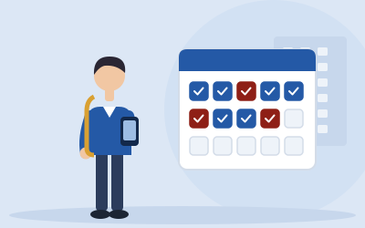

สำหรับนักศึกษา
สิ่งที่นักศึกษารุ่นรหัส 66 ต้องทำในภาคการศึกษาที่ 2/2569 ตั้งแต่ยืนยันที่ฝึกจนส่งผลงานครบ ทั้งงานตามตำแหน่ง (ENGSE305) และโครงงาน (ENGSE304)

ขั้นตอนตลอดภาค
ยืนยันที่ฝึกและข้อตกลง
สัปดาห์ที่ 0 วันที่ 9–17 พ.ย. 2569- เตรียมข้อมูลก่อนกรอก: ชื่อ ตำแหน่ง และอีเมลของผู้นิเทศงาน ลิงก์ Google Maps ของบริษัท และที่ไม่บังคับ ได้แก่ เบอร์มือถือของคุณ CV เป็นไฟล์ PDF ไม่เกิน 5 MB เบอร์โทรของผู้นิเทศงาน (ถามก่อนว่ายินยอมหรือไม่) เบอร์กลาง เว็บไซต์ และรูปหน้าบริษัท อ่าน การคุ้มครองข้อมูลส่วนบุคคล ว่าใครเห็นข้อมูลใด
- เข้าระบบ SE-WIL ด้วยอีเมลมหาวิทยาลัย แล้วกรอกตำแหน่งงาน ผู้นิเทศงาน ที่ปรึกษาร่วม โจทย์ 1–2 หัวข้อ และรูปแบบการทำงาน กด "บันทึกร่าง" แล้วแนบ CV ส่งภายใน 13 พ.ย.
- เมื่ออาจารย์อนุมัติ ระบบจะส่งข้อตกลง SE-WIL01 ให้ผู้นิเทศงานทางอีเมลทันที แจ้งผู้นิเทศงานให้ยืนยันภายใน 16 พ.ย.
- ลงทะเบียน ENGSE304 และ ENGSE305 หลังหลักสูตรอนุมัติที่ฝึกในระบบ SE-WIL แล้ว
เริ่มฝึกและวางแผนโครงงาน
สัปดาห์ที่ 1–3 วันที่ 18 พ.ย. ถึง 8 ธ.ค. 2569- รายงานตัวที่สถานประกอบการ และเข้าปฐมนิเทศออนไลน์ 2–3 ชั่วโมง (กติกาแยกหลักฐาน ทรัพย์สินทางปัญญา ข้อมูลส่วนบุคคล ความปลอดภัย การลา)
- บันทึก logbook ตั้งแต่วันแรก อ่านวิธีบันทึก
- ส่งรายงานตัวและแผนงาน 15 สัปดาห์ (SE-WIL03) ในสัปดาห์ที่ 2
- ร่างข้อความปัญหากับที่ปรึกษาร่วม แล้วส่งข้อเสนอโครงงาน (SE-WIL05) ภายใน 8 ธ.ค.
นิเทศและทบทวนความก้าวหน้า
สัปดาห์ที่ 4–10 วันที่ 9 ธ.ค. 2569 ถึง 26 ม.ค. 2570- รับผลพิจารณาข้อเสนอในสัปดาห์ที่ 4 และแก้ไขถ้ามี
- ส่งแฟ้มนักศึกษาให้อาจารย์นิเทศก่อนวันนิเทศอย่างน้อย 7 วัน การนิเทศครั้งที่ 1 อยู่ในสัปดาห์ที่ 5–7
- สัปดาห์ที่ 8 ส่ง SRS หรือ user stories และแบบจำลองการออกแบบ ผู้นิเทศงานประเมินกลางภาค
- สัปดาห์ที่ 10 ส่งรายงานความก้าวหน้า (SE-WIL07) พร้อม repository หรือเดโม ชั่วโมง ENGSE305 ที่รับรองแล้วควรใกล้ 200
พัฒนา ทดสอบ และเขียนรายงาน
สัปดาห์ที่ 11–13 วันที่ 27 ม.ค. ถึง 16 ก.พ. 2570- พัฒนาระบบ ทำแผนและรายงานการทดสอบ
- ถ้าจำเป็นต้องถอนรายวิชา ทำได้ถึงวันที่ 9 ก.พ. 2570 (ได้ W)
- ส่งร่างรายงานและรายงานการทดสอบให้ที่ปรึกษาและที่ปรึกษาร่วม เพื่อตรวจเนื้อหาลับ
ประเมินปลายภาคและสอบ
สัปดาห์ที่ 14–16 วันที่ 17 ก.พ. ถึง 9 มี.ค. 2570- ส่งรายงานสะท้อนการเรียนรู้ (SE-WIL12) และสาธิตผลงานต่อสถานประกอบการในสัปดาห์ที่ 14
- นำเสนอแฟ้มผลงาน สอบปากเปล่าและสาธิต และส่งรายงานฉบับสมบูรณ์ในสัปดาห์ที่ 15
- ตรวจว่าชั่วโมงที่รับรองแล้วครบ 300 (ENGSE305) และ 135 (ENGSE304)
สามเรื่องที่ทำให้ไม่ผ่านบ่อยที่สุด
ชั่วโมงไม่ครบเพราะไม่ได้รับรอง ชั่วโมงนับเฉพาะรายการที่ผู้นิเทศงานรับรองแล้ว ถ้าไม่มีการรับรองเกิน 1 สัปดาห์ ให้แจ้งอาจารย์นิเทศทันที
นับงานชิ้นเดียวให้สองวิชา งานประจำจะใช้เป็นผลงานของ ENGSE304 ได้เมื่อระบุไว้ในข้อเสนอที่อนุมัติแล้ว และนับจากวันนั้นชั่วโมงของงานนั้นเป็นของ ENGSE304 เท่านั้น
นำข้อมูลจริงของลูกค้าออกนอกบริษัท รายงานและการสาธิตใช้ข้อมูลทดสอบสังเคราะห์ และต้องได้รับอนุญาตเผยแพร่ (SE-WIL11) ก่อนสอบ
การประเมินผล
ทั้งสองวิชาให้ระดับคะแนน A–F แยกกัน สัดส่วนคะแนนเป็นฉบับร่างที่รอมติกรรมการบริหารหลักสูตร